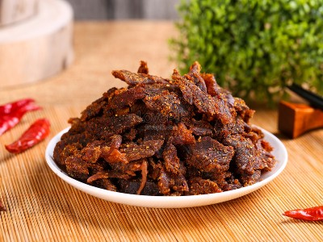

|  |
Food's name: Dry beef▸ Ingredients:
▸ Time to prepare: 50 minutes ▸ Approx quantity: 1 medium sized jar |
▸ Detailed recipe:
Step 1: Preliminary treatment:
- Wash the beef to dry, then cut the beef into pieces about 1cm thick and 10-20cm long.
Note: slicing beef according to the grain will help the finished piece of meat have more length, taste and be easier to tear.
Step 2: Prepare to season and marinate the beef:
- Mince garlic, ginger, lemongrass (or use a blender). Marinate beef with spices, each seasoning to taste (about 1 tablespoon), five spices, lemon and add garlic, ginger,
and lemongrass last. Massage the meat for about 15-20 minutes and let it rest overnight (from 8 to 10 hours).
- During the marinating process, you should also re-operate the massage for the meat, then wrap the food wrap so that the meat is evenly absorbed.
Step 3: Processing beef jerky:
- After taking out the beef, stir-fry on a large thick-bottomed pan with low heat for 30-45 minutes. Turn the meat often and stir with your hands every time you flip it.
Because beef releases its water, readers may not need to add water during the cooking process, if it is too hot or distracting, you can add more water to the pan, but it
should be warm. The added water needs to be treated sparingly, avoiding too much water to make the beef lose its taste.
- If the beef is soaked in water, the pan is shallow and the meat turns brown, turn off the heat, then spread the meat out onto a baking tray. Preheat oven to 100-120°C.
- If you want to make beef pieces, press the meat thinly and spread it evenly on a baking tray. If you want to process beef, just tear or pound the beef in a mortar until
the beef is divided into many small fibers.
- Finally, spread the beef evenly on the baking tray, bake the beef for 10 minutes at a temperature of 100°C, every 10 minutes, turn the beef over and grill again.
Operate 3 to 4 times (ie 30-40 minutes) the beef will be dry. If the beef loses water too quickly or the temperature is too high, you can use a brush to brush off excess oil
or seasoning to add moisture to the meat.
=> So you've got a snack that's both delicious, convenient, and can be used for a long time.
▸ Calories and related information: